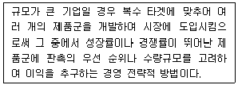
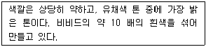
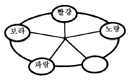
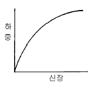

섬유디자인산업기사 (2003-08-10 기출문제)
1과목: 디자인개론
1. 새로운 양식의 가구에 이 이름을 붙인 것으로 곡선을 위 주로 한 자유로운 의장의 패턴은?
- 아르누보 패턴
- 모리스 패턴
- 페이즐리 패턴
- 사라사 패턴
(정답률: 알수없음)

2. 섬유 디자인의 3대 요소는?
- 시장성, 가공성, 예술성
- 시장성, 가공성, 독창성
- 가공성, 예술성, 독창성
- 가공성, 독창성, 모방성
(정답률: 알수없음)
3. 패턴 표현방식의 종류가 아닌 것은?
- 사실적인 표현
- 모방적인 표현
- 추상적인 표현
- 회화적인 표현
(정답률: 알수없음)
4. 톱(Top)방향이 아닌 것은?
- 위사 방향이다.
- 원단 길이 방향이다.
- 경사 방향이다.
- 변사 마크 방향이다.
(정답률: 알수없음)
5. 트렌드에 대한 바른 설명은?
- 유행의 방향, 경향을 뜻한다.
- 과거에만 유행했던 것을 뜻한다.
- 현재 유행하고 있는 것을 모방하여 새로운 것으로 만든다.
- 유행의 경향이 오랫동안 진행하다가 소멸되지 않은 것을 뜻한다.
(정답률: 알수없음)
6. 원단폭이 44인치이고, 스크린 톱 사이즈가 24인치일 때 스크린 형틀의 내경 크기로 가장 적당한 것은?
- 30× 60(인치)
- 18× 44(인치)
- 44× 22(인치)
- 16× 20(인치)
(정답률: 알수없음)
7. 페이퍼 디자인의 제작 방법 중 틀린 것은?
- 오리지널 디자인 - 디자이너가 스스로 창조 개발한 새로운 디자인
- 모티파이 디자인 - 기존의 디자인에서 일부 또는 전체를 수정하여 만든 디자인
- 시리즈 디자인 - 소비자들의 반응이 좋은 디자인을 비슷하게 하여 일관성 있게 개발하는 디자인
- 어소트 디자인 - 주문에 의해 색상과 모티브를 구성한 디자인
(정답률: 알수없음)
8. 섬유산업은 정체되지 않고 주기적으로 변화하고 있다. 패션의 주기를 옳게 설명한 것은?
- 도입기 - 상승기 - 폐지기 - 절정기 - 쇠퇴기
- 도입기 - 절정기 - 상승기 - 쇠퇴기 - 폐지기
- 도입기 - 상승기 - 절정기 - 폐지기 - 쇠퇴기
- 도입기 - 상승기 - 절정기 - 쇠퇴기 - 폐지기
(정답률: 알수없음)
9. 선염 넥타이 제조공정 과정의 설명으로 옳은 것은?
- 섬유-염색-제사-연사-제직-후처리 가공-봉제-제품
- 섬유-제사-염색-연사-제직-후처리 가공-봉제-제품
- 섬유-염색-연사-제사-제직-후처리 가공-봉제-제품
- 섬유-제사-염색-제직-연사-봉제-후처리 가공-제품
(정답률: 알수없음)
10. 상품기획 과정 중 표적시장 선정을 위해 치밀한 마켓 전략 방법 중 아래 설명에 맞는 전략은?

- 상품 차별화 전략
- 시장 세분화 전략
- 제품의 포트폴리오 전략 (portfolio)
- 소품종 소량생산 전략
(정답률: 알수없음)
11. 옛 고려자기 주전자의 측면을 본다면, 한 쪽은 주둥이가 있고, 한쪽은 손잡이가 붙어 있어서 축에 대해서는 좌우 대칭이 아니지만 아름답게 보일 뿐만 아니라 안정감이 있어 보인다. 여기에 해당하는 디자인의 원리는?
- 균형(Balance)
- 균제(Symmetry)
- 율동(Rhythm)
- 조화(Harmony)
(정답률: 알수없음)
12. Textile printing design에 대한 설명 중 틀린 것은?
- 최소한의 단위로 만들어진 페이퍼 디자인을 말한다.
- 날염작업에 필요한 패턴과 컬러로 이루어진다.
- 날염 디자인의 3대 요소는 진보성, 가공성, 예술성이다.
- 원단에 인날작업을 통해 페이퍼상의 디자인이 직물상에 재표현 된다.
(정답률: 알수없음)
13. 다음 중 섬유 디자인 상품기획 순서가 옳은 것은?
- 정보수집 및 분석 - 종합 기획회의 - MD 및 소재컨셉트 결정 - 디자인 제작
- 종합 기획회의-정보수집 및 분석 - MD 및 소재컨셉트 결정 - 디자인 제작
- MD 및 소재컨셉트 결정-종합 기획회의 - 정보수집 및 분석 - 디자인 제작
- 디자인 제작 - 종합 기획회의 - 정보수집 및 분석 - MD 및 소재컨셉트 결정
(정답률: 알수없음)
14. 디자인 상의 상하변 문양은 서로 연결되게 하고 좌우변 문양은 디자인 사이즈의 1/2, 1/3, 1/4씩 서로 엇갈려 이동시켜 연결하는 구성방법은?
- 브릭(Brick)패턴
- 스퀘어(square)패턴
- 다이아몬드(Diamond)패턴
- 하프드롭(Half Drop)패턴
(정답률: 알수없음)
15. 무늬를 칼로 오려 낸 형지, 또는 금속판 등을 원단위에 올려놓고 그 위에 무늬를 나타내는 방법은?
- 형지 날염
- 핸드 스크린 날염
- 블록 날염
- 분무 날염
(정답률: 알수없음)
16. 다음 중 디자인의 요소가 아닌 것은?
- 점
- 명암
- 형
- 균형
(정답률: 알수없음)
17. 패턴의 유형 중 직물의 가장자리에 띠 모양의 문양을 배치한 패턴으로 양쪽 가장자리에 패턴을 배열하거나 한쪽면에 배열하는 명칭은?
- 패널 패턴
- 앙상블 패턴
- 보더 패턴
- 원 포인트 패턴
(정답률: 알수없음)
18. 미술공예운동의 대표자로 벽지디자인, 직물디자인 발전에 기여한 사람은?
- 존 러킨스
- 윌리암 모리스
- 존 케이
- 리차드 아크라이트
(정답률: 알수없음)
19. Albers'의 바우하우스 시대 기초교육의 목표가 아닌것은?
- 재료에 감정을 넣고 주관하는 것을 익히는 것
- 여러 가지 재료와 도구의 체험과 요령을 익히는 것
- 자연을 연구하여 조형의 기본요소와 방법을 가르치는 것
- 재료의 잠재적인 가능성을 발견하고 객관화의 방향을 교육하는 것
(정답률: 알수없음)
20. 디자인에서 실용성과 같은 의미로 간주되는 것은?
- 경제성
- 심미성
- 독창성
- 합목적성
(정답률: 알수없음)
2과목: 색채학
21. 우리가 공기중의 무지개를 볼 수 있는 이유는?
- 반사 작용
- 분광 작용
- 투과 작용
- 파장 작용
(정답률: 알수없음)
22. 오스트발트 표색계의 기본이 되는 색채(related color)의 설명으로 틀린 것은?
- 완전색( C )
- 모든 파장의 빛을 거의 흡수하는 흑색(black. B)
- 모든 파장의 빛을 거의 반사하는 백색(white. W)
- 모든 파장의 빛을 완전히 투과하는 청색(blue. B)
(정답률: 알수없음)
23. 가법혼색의 3원색에 해당되지 않는 것은?
- 적색
- 녹색
- 청자색
- 황색
(정답률: 알수없음)
24. 다음 중 딱딱한 느낌을 주는 톤에 속하지 않는 것은?
- strong tone
- deep tone
- dull tone
- 한색계통의 grayish tone
(정답률: 알수없음)
25. 스펙트럼 현상에서 파장이 가장 긴 색은?
- 빨강
- 보라
- 노랑
- 녹색
(정답률: 알수없음)
26. 색채의 병치혼합을 이용하여 그림을 표현한 화가들이 모인 화파는?
- 고전주의
- 추상주의
- 인상주의
- 낭만주의
(정답률: 알수없음)
27. 다음은 색채사용에 있어 시대적 특징에 대한 설명이다. 해당되는 시기는? (부드러운 색조로 엷은 자주색, 부드러운 회색조의 분홍색, 녹색, 회색등이 흰색이나 금색과 겸하여 사용되었다)
- 로코코
- 아르누보, 아르데코
- 바우하우스
- 중세
(정답률: 알수없음)
28. 색상의 혼합 중 감산혼합(감법혼색)과 거리가 가장 먼것은?
- M＋Y=R
- Y＋C=G
- C＋M=B
- B＋G=M
(정답률: 알수없음)
29. 작품이나 제품 이미지를 구체화시키고 도시나 건축에도 동일화를 이루기에 가장 효과적인 것은?
- 감성
- 색채
- 정보
- 개성
(정답률: 알수없음)
30. 자극을 주어 색각이 생긴 후 자극을 제거하면 제거한 후에도 그 흥분이 남아서 원 자극과 동질 또는 이질의 감각 경험을 일으키는 것은 무슨 현상인가?
- 대비
- 잔상
- 동화
- 배색
(정답률: 알수없음)
31. 먼셀의 기호 표시법이 맞는 것은?
- HC/V
- HV/C
- VH/C
- CH/V
(정답률: 알수없음)
32. 물체를 오래 보면 그 색에 순응되어 색의 지각이 약해지는 현상은?
- 암순응
- 색순응
- 푸르킨예 현상
- 명순응
(정답률: 알수없음)
33. 다음은 오스트발트의 색채체계에 관한 설명이다. 부적절한 것은?
- 표색기호는 색상번호, 하양량, 검정량을 나타내는 순서로 표기된다.
- E. 헤링의 4원색 이론을 기본으로 한다.
- 24 색상환을 사용한다.
- 명도단계를 검정「0」에서 하양「10」까지 11단계로 구분한다.
(정답률: 알수없음)
34. 톤(tone)의 설명이 아닌 것은?
- 유채색에 8그룹, 무채색에 32그룹으로 되어있다.
- 표시 P10은 엷은 톤의 색상10의 색을 말한다.
- 색의 농담이나 명암 그리고 강약등의 적용을 말한다.
- 명도와 채도가 관련되어 있다.
(정답률: 알수없음)
35. 색채계획 수립과정에서 디자이너가 효과적인 색지정을 하기 위하여 갖추어야 할 능력과 상관이 가장 먼 것은?
- 색채 변별 능력
- 색채 광고 능력
- 색채 조색 능력
- 색채 구성 능력
(정답률: 알수없음)
36. 어떠한 이미지를 가지고 있는가를 연구하는 색채심리분석에서 요구되는 능력은?
- 색채구성 능력
- 색채변별 능력
- 마케팅 능력
- 컬러컨설턴트의 능력
(정답률: 알수없음)
37. 다음 특성을 지닌 톤은?

- 엷은(pale)
- 진한(deep)
- 어두운(dark)
- 선명한(vivid)
(정답률: 알수없음)
38. 뚜렷하고 화려하게 처리하고자 할 때 파랑과 함께 배색하면 좋은 색은?
- 주황
- 보라
- 검정
- 녹색
(정답률: 알수없음)
39. 먼셀(Munsell)의 20 색상환 중 기본 5색이다. 빈칸의 색은?

- 녹색
- 남색
- 연두
- 주황
(정답률: 알수없음)
40. 같은 색상, 같은 명도의 색지를 백지위에 채도 순으로 나열해 보면 가장 채도가 높은 끝 부분에 있는 색은 한층 짙게 보이는데 이것을 무엇이라 하는가?
- 단말효과
- 투명시
- 주목효과
- 명도대비
(정답률: 알수없음)
3과목: 섬유재료학
41. 면화를 섬유와 종자로 분리시키는 작업은?
- cotton ginning
- roller gin
- cotton boling
- saw gin
(정답률: 알수없음)
42. 면섬유중에서 품질이 가장 좋은 것은?
- 미국면(American cotton)
- 이집트면(Epyptian cotton)
- 해도면(Sea island cotton)
- 인도면(Indian cotton)
(정답률: 알수없음)
43. 스판덱스(spandex)의 가장 두드러진 특성은?
- 강도가 크다.
- 신도가 크다.
- 흡습성이 좋다.
- 내마모성이 좋다.
(정답률: 알수없음)
44. 스킨 코어(skin core)구조란?
- 표면층과 내부의 구조가 뚜렷하게 다른 구조이다.
- 용융방사 시 제일 많이 나타난다.
- 단면으로 표면과 내부의 미세구조가 같다.
- 표면의 조직이 치밀하고 기계적 성질이 우수한 부분을 코어라 한다.
(정답률: 알수없음)
45. 나일론 66의 융점은 어느 정도인가?
- 215℃
- 225℃
- 250℃
- 283℃
(정답률: 알수없음)
46. 누에고치실의 피브로인(fibroin)함유량은?
- 20∼25%
- 50∼60%
- 75∼80%
- 80∼90%
(정답률: 알수없음)
47. 나일론 6의 원료는?
- 헥사메틸렌 디아민
- 아디프산
- 에틸렌글리콜
- 카프로락탐
(정답률: 알수없음)
48. 다음의 각종 섬유 가운데 미생물에 의하여 정련이 이루어지고 있는 것은?
- 양모
- 아마
- 폴리아미드 섬유
- 면
(정답률: 알수없음)
49. 다음 그림은 어떤 섬유의 하중-신장 곡선이다. 이 섬유의 일인자(work factor)는 다음 중 어느 것인가?

- 1/2 보다 작다.
- 1/2 이다.
- 1/2 보다 크다.
- 1 이다.
(정답률: 알수없음)
50. 다음 중 섬유의 단면 형태가 물성에 미치는 영향이 아닌것은?
- 길이
- 광택
- 보온성
- 촉감
(정답률: 알수없음)
51. 섬유형성 고분자로서 갖추어야 할 성질이 아닌 것은?
- 선형 고분자이어야 한다.
- 분자간 인력이 커야 한다.
- 분자량이 커야 한다.
- 소수기(疎水基)가 있어야 한다.
(정답률: 알수없음)
52. 섬유의 복굴절율과 가장 관계가 있는 것은?
- 결정화도(crystallinity)
- 팽윤성(swelling)
- 점탄성(viscoelasticity)
- 배향인자(orientation factor)
(정답률: 알수없음)
53. 실의 강력과 관련하여 섬유상호간 마찰계수의 특성을 가장 올바르게 설명한 것은?
- 마찰계수가 클수록 실의 강력은 감소한다.
- 마찰계수가 클수록 섬유상호간 포합성이 증가하여 실의 강력은 증가한다.
- 방적성에서 마찰계수와 실의 강력은 직접적인 상호 관계가 없다.
- 마찰계수는 섬유상호간 결합력에 영향을 주지 않는다
(정답률: 알수없음)
54. 마섬유가 강도는 크나 신도가 작은 가장 주요한 원인은?
- 루우멘이 작다.
- 피브릴이 평행집속되어 있다.
- 마디가 있다.
- 접착물질이 많다.
(정답률: 알수없음)
55. 다음 중 방추성이 커서 직물에 구김이 잘 생기지 않도록 만드는 성질은?
- 흡습성
- 대전성
- 내열성
- 레질리언스
(정답률: 알수없음)
56. 양모를 보통 한마리 분씩 따로 다루는데 한마리 분의 양모를 무엇이라고 하는가?
- 플리이스(Fleece)
- 베일(bale)
- 요우크(yolk)
- 켐프(kemp)
(정답률: 알수없음)
57. 가소성(plasticity)이 가장 좋은 것은?
- 비스코스(viscose)
- 양모(wool)
- 아마(flax)
- 카폭(kapok)
(정답률: 알수없음)
58. 군수용 피복을 저장하는 경우 다음의 섬유 제품 중 방충제를 필요로 하는 것은?
- 아세테이트 레이온
- 폴리아미드계 합성섬유
- 폴리에스테르계 섬유
- 양모
(정답률: 알수없음)
59. 면의 공정 수분율은?
- 7.0%
- 7.5%
- 8.0%
- 8.5%
(정답률: 알수없음)
60. 다음 섬유중에서 비중이 작은 순서로 올바르게 나타낸것은?
- 나일론 < 면 < 폴리에스테르 < 올레핀 섬유
- 올레핀 섬유 < 나일론 < 폴리에스테르 < 면
- 폴리에스테르 < 올레핀 섬유 < 면 < 나일론
- 폴리에스테르 < 나일론 < 올레핀 섬유 < 면
(정답률: 알수없음)
4과목: 날염학
61. 면직물의 발염제로서 가장 일반적으로 쓰이고 있는 것은?
- 롱갈릿 C
- 아연가루
- 주석염
- 포도당
(정답률: 알수없음)
62. 전사 날염에 주로 이용되는 섬유는?
- 면직물
- 마직물
- 모직물
- 폴리에스테르 직물
(정답률: 알수없음)
63. 열승화 전사에 쓰이는 염료는?
- 안료수지염료
- 건염염료
- 염기성염료
- 분산염료
(정답률: 알수없음)
64. 섬유 표면의 날염풀로부터 많은 염료를 섬유 속으로 옮겨주는 목적으로 쓰이는 약제는?
- 염료 용해제
- 염착 촉진제
- 방부제
- 발염제
(정답률: 알수없음)
65. 다음과 같은 일반식을 가지고 있는 염료는? S-F-T-X(단,S=가용성기,F=염료분자,T=반응기의 지지물, X=반응기)
- 아조익 염료
- 황화 염료
- 반응성 염료
- 배트 염료
(정답률: 알수없음)
66. 염색 방법에 따른 날염의 종류가 아닌 것은?
- 직접날염
- 방염
- 전사날염
- 교방염
(정답률: 알수없음)
67. 염료의 사용상 분류에 속하지 않는 것은?
- 직접 염료
- 인디고 염료
- 산성 염료
- 반응성 염료
(정답률: 알수없음)
68. 스크린 제작용 메시(미국식)란?
- 1㎝× 1㎝ 사이의 눈의 수
- 2.54㎝× 2.54㎝ 사이의 눈의 수
- 1m× 1m 사이의 눈의 수
- 1yard 사이의 눈의 수
(정답률: 알수없음)
69. 배트염료의 2상 날염법에 속하는 날염법은?
- 묘염법
- 방염법
- 크레폰법
- 콜로레진법
(정답률: 알수없음)
70. 카세인(casein)날염 호료가 속하는 것은?
- 전분 풀
- 단백질 풀
- 천연고무
- 가공녹말 풀
(정답률: 알수없음)
71. 날염의 조작법에 의한 분류이다. 틀린 것은?
- 손날염
- 자동스크린날염
- 전사날염
- 방염날염
(정답률: 알수없음)
72. 다음 중 가장 쉬운 제판법은?
- 사방이음무늬
- 제판 1/2 스텝
- 천지스텝
- 1/3스텝
(정답률: 알수없음)
73. 다음 중 안료수지 염료의 장점에 속하지 않는 것은?
- 적당한 수지를 사용하여 모든 섬유에 착색시킬 수있다.
- 염기성염료, 반응성염료에 비해 색깔이 좋다.
- 색깔의 재현성이 좋고, 색깔 관리가 쉽다.
- 염료를 사용할 때보다 섬세한 무늬의 날염을 할 수있다.
(정답률: 알수없음)
74. 자동 스크린 날염시 endless belt가 사용 중 파손되는 원인이 아닌 것은?
- 몽키, 스패너, 망치 등의 공구가 스크린 frame에 끼었을 때
- 두터운 섬유나 인날호를 과량 사용하였을 때
- belt 이동이 중단된 상태에서 수세 brush가 장기간 회전 하였을 때
- 스크린 frame을 장착 시킬 때 모서리가 belt를 찍었을 때
(정답률: 알수없음)
75. 면, 인견에 쓰이며 환원제로서 황화나트륨이나 설파이드를 쓰는 염료는?
- 황화염료
- 산성매염염료
- 나프톨염료
- 반응성염료
(정답률: 알수없음)
76. 배트염료의 용해제로 사용되는 약품은?
- 수산화나트륨
- 레조르신
- 콜로레진
- 루이코트롭
(정답률: 알수없음)
77. 다음 중 날염후 물감의 고착 발색 및 발염을 나타나게 하는 후처리 장치는?
- 고압장치
- 증열장치
- 건조장치
- 수세장치
(정답률: 알수없음)
78. 무지로 염색된 직물의 바탕색을 빼내는 동시에 원하는 색을 염착시켜 무늬를 표현하는 방법은?
- 백색발염
- 착색발염
- 백색방염
- 착색방염
(정답률: 알수없음)
79. 다음 중 자동식 스크린 날염에 대한 설명이 아닌 것은?
- 습상인날(濕上印捺:wet on wet)방식이다.
- 생지가 고정되어 있고 형틀을 이동하면서 인날한다.
- 생지가 이동하고 형틀이 상하(上下)로 작동되게 고정되어 있다.
- 대단히 능률적이다.
(정답률: 알수없음)
80. 분산염료에 의한 폴리에스테르 섬유의 날염에서 염료고착을 위한 고온증열방법으로 맞는 것은?
- 130℃ × 7분
- 130℃ × 30분
- 170∼180℃ × 7분
- 170∼180℃ × 30분
(정답률: 알수없음)